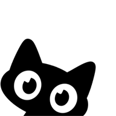

Alop
Entrar
Alop
¿Añadir Alop a tu pantalla de inicio?
Se abrirá como una app: a pantalla completa, más rápida y con avisos.
Ahora no
Sí, añadir
Así de fácil
Toca
Compartir
en la barra de Safari
Elige
«Añadir a pantalla de inicio»
Toca
Añadir
: ya tienes Alop con tu cuenta
Entendido